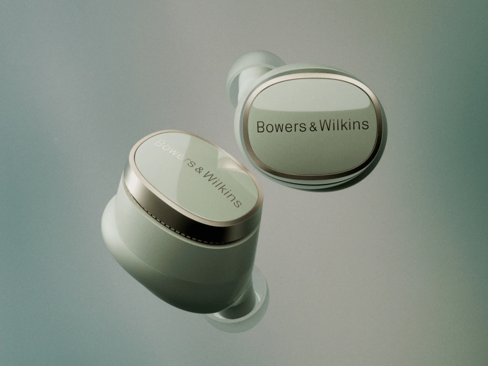
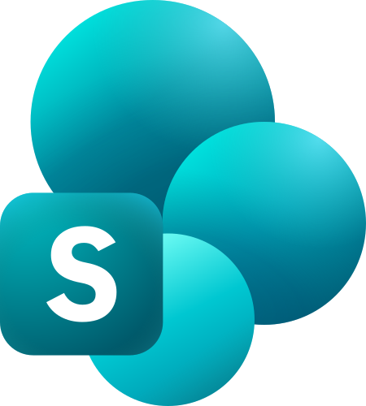
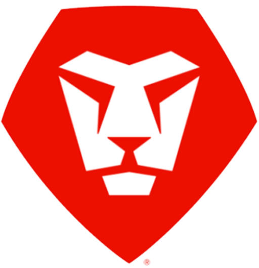

Sound United (acquired by HARMAN Int.)
Bowers & Wilkins - Pi8 Earbuds Product Launch
Managed the design and user flow for the Bowers & Wilkins Pi8 Earbuds product launch, from brand review through product launch.
01
Lead Technical Project Manager with 6+ years of experience delivering digital platforms, web and e-commerce programs, and cross-functional technology initiatives across enterprise, agency, startup, and international environments. Experienced leading developers, business analysts, QA, UX/UI, and contractors through requirements, planning, Jira delivery, technical risk, QA/UAT, release readiness, and production delivery. Strong track record of stepping into complex delivery environments, identifying structural problems, and rebuilding the processes, ownership, systems, and controls needed to move work reliably from planning through production. Previous brand experience includes Bowers & Wilkins, Denon, Polk Audio, Union Pacific, Angostura Bitters, and Ecolab.
02
 Jira
Jira Confluence
Confluence Microsoft 365
Microsoft 365
SharePoint Microsoft Teams
Microsoft Teams Figma
Figma GitHub
GitHub Azure
Azure WordPress
WordPress
Adobe Workfront Upwork
Upwork Google Workspace
Google Workspace Excel
Excel03
04

Sound United (acquired by HARMAN Int.)
Managed the design and user flow for the Bowers & Wilkins Pi8 Earbuds product launch, from brand review through product launch.
Sound United (acquired by HARMAN Int.)
Managed CRO Campaign for entire Polk Audio Ecommerce Site. Tracked ~100 Jira tickets, partnering with DTC lead and external CRO agency for A/B Testing. Collaborated 1-on-1 with in-house designer via Figma to implement approved CRO findings into design modules. Handed off finished design assets to dev team for QA/UAT and live deployment. Updated Figma design modules were backlogged to Confluence repository. This initiative resulted in a 23% lift in checkout conversion rate and 15% decrease in bounce rate within 60 days post-launch.
H+K Strategies
Directed UX wireframes and content production for Angostura Bitters’ “Bitters 101” digital experience, guiding users through a four-product interactive carousel, cocktail recipe filters, and embedded how-to video content. Collaborated with in-house designers and Angostura stakeholders to source tasting notes, cocktail pairings, stock imagery, and brand-reviewed copy. Delivered a polished, responsive experience that significantly modernized the brand’s digital presence and enhanced user navigation and content engagement across 30+ curated recipes.
05
Technology Delivery Lead — Contract
–
Chief Technology Officer – Freelance
– Present
Operations Manager – Part-time
–
Web Project Manager – Creative Services | Bowers & Wilkins / Denon / Polk Audio
–
Web Project Manager & Digital Producer | Innovation + Creative Team
–
Co‑Founder / Web Project Manager / Operations Lead
–
Freelance Web Project Manager
– Present
Founder
– Present
06
Bachelor of Arts, Music (2017)
Men’s Varsity Soccer · Men’s Ultimate Frisbee · Orchestra · The Improvisation Group of Lawrence University (IGLU) · Lawrence University Cello Studio · Beta Theta Pi
07
Provides freelance web‑project‑management services through Upwork.com